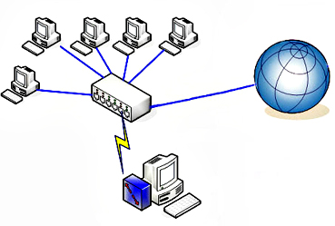

Lan
Il termine LAN sta ad indicare una "Local Area Network" ovvero una rete
informatica formata da elaboratori situati nella stessa area: essa può
essere posta in essere all'interno di un'abitazione, di un palazzo o di
un'area geografica molto localizzata. In genere questa tipologia di rete
non ha un numero alto di elaboratori connessi.
Al giorno d'oggi le LAN sono utilissime in contesti aziendali dove
rappresentano uno strumento produttivo non indifferente. Basti pensare,
tra le altre cose, che possiamo: spostare da un piano all'altro dell'edificio
un progetto al quale si sta lavorando, condividere le connessioni verso
l'esterno (Internet in primis), comunicare con i colleghi tramite servizi
quali posta elettronica et simila, gestire documenti comuni.
Anche nelle abitazioni le LAN iniziano a divenire un ottimo strumento perchè
mettendo in comunicazione i vari computers possiamo: muovere le fotografie
dell'ultimo compleanno da un computer all'altro, usare una sola stampante per
tutti gli elaboratori presenti in casa, archiviare tutti i documenti dentro
un unico hard disk e così via.
